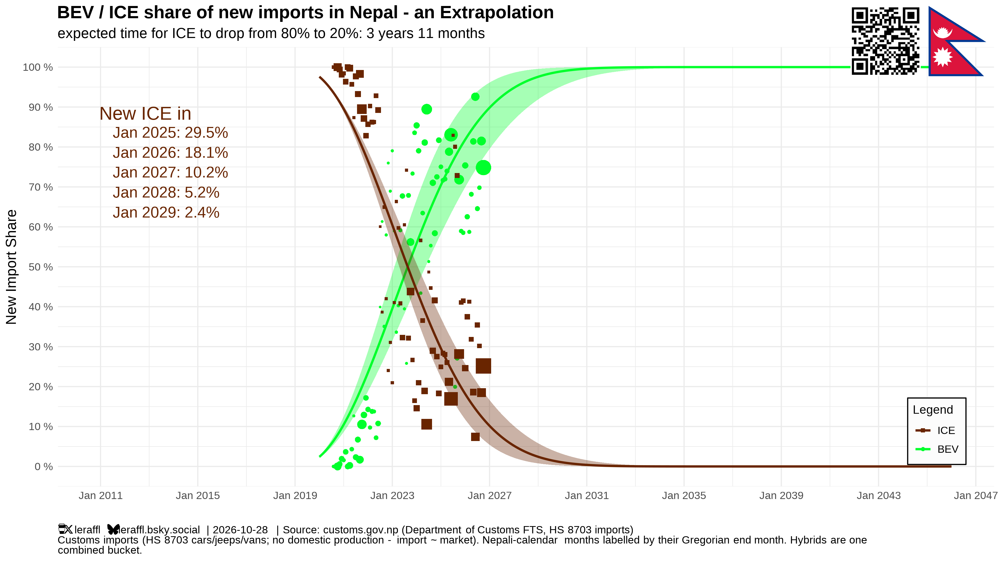
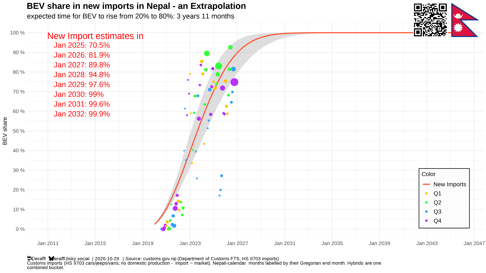
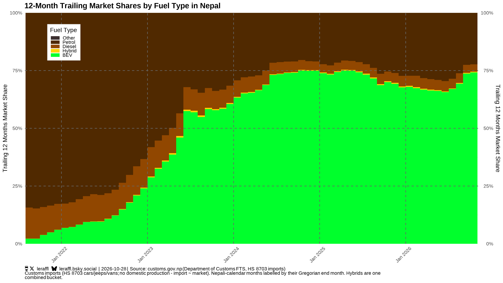

Nepal
Data through October 2026 · curve fitted 2026-10-28 File
Who gained, who lost
Lost share: Petrol 3.1 and diesel 1.0. Gained: Battery electric 4.2. In percentage points of all new registrations.
Share of new registrations in the last 12 months (Nov 2025 to Oct 2026) against the 12 months before (Nov 2024 to Oct 2025). The changes add up to zero: what one row gains, the others lose. A row appears only where the source fills that column in every period of both windows; everything else is in the last row.
The latest periods
| Period | All registrations | BEV | BEV % | Hybrid % | Everything else % |
|---|---|---|---|---|---|
| Oct 2026 | 5,080 | 3,802 | 74.8 | 0.18 | 25.0 |
| Sep 2026 | 2,632 | 2,145 | 81.5 | 0.53 | 18.0 |
| Aug 2026 | 987 | 689 | 69.8 | 2.3 | 27.9 |
| Jul 2026 | 1,202 | 776 | 64.6 | 0.33 | 35.1 |
| Jun 2026 | 2,468 | 2,285 | 92.6 | 0.08 | 7.3 |
| May 2026 | 1,762 | 1,434 | 81.4 | 0.06 | 18.6 |
| Apr 2026 | 1,137 | 775 | 68.2 | 0.26 | 31.6 |
| Mar 2026 | 855 | 502 | 58.7 | 0.0 | 41.3 |
| Feb 2026 | 1,316 | 823 | 62.5 | 0.23 | 37.3 |
| Jan 2026 | 1,689 | 1,273 | 75.4 | 0.41 | 24.2 |
| Dec 2025 | 1,020 | 597 | 58.5 | 0.20 | 41.3 |
| Nov 2025 | 989 | 583 | 58.9 | 0.51 | 40.5 |
| Oct 2025 | 2,971 | 2,134 | 71.8 | 0.13 | 28.0 |
Shares are the column divided by the source's own total. The last column is what remains after the columns to its left. Newest first.
The fitted curve
| BEV share | Curve reaches it in | 95 % confidence interval |
|---|---|---|
| 10 % | 2020 | 2020–2022 |
| 20 % | 2021 | 2020–2023 |
| 50 % | 2023 | 2022–2025 |
| 80 % | 2025 | 2023–2029 |
| 90 % | 2027 | 2024–2032 |
The interval is for the fitted line, point by point, and holds only if the transition keeps following an S-shape. How the intervals are calculated.
The gallery fits a generalized Weibull curve to the BEV share of each period: share(t) = 1 − exp(v1 · (t − t0)v2), t in calendar years. For Nepal: v1 = −2.434 × 10−2, v2 = 2.184, t0 = 2019, fitted through October 2026, model run 2026-10-28. This is the project's own model, not an official forecast. A policy change or a stall is not in it.
The gallery charts


Combustion, battery electric and hybrid curves

BEV share with the fitted curve

Market split, trailing twelve months Time to reach each BEV share
Time to reach each BEV shareRendered 2026-10-28 from data through Oct 2026. Charts are CC BY 4.0; open one for the full size.
Where the numbers come from
Vehicle-import figures for Nepal from the Department of Customs' monthly cumulative Foreign Trade Statistics workbooks (HS 8703).
Raw source
Go and check the numbers yourself:
Department of Customs — customs.gov.np (FTS workbooks) ↗
Access to the machine endpoint behind this page needs credentials — the developer doc at the foot of the page has the details.
How the data flows
Each new or changed month re-renders the country. Shares are read from the CSV as column ÷ TOTAL and grouped into three curves. A generalized Weibull S-curve is fitted to the BEV and the ICE share, and the charts, the fitted parameters, the twelve-month totals and the uncertainty bands are rewritten.
- BEVBEV
- PHEV or EREV (plug-in hybrids, range extenders)Does the source split plug-ins from other hybrids?
- yesPHEV
- no — one combined hybrid figure (parked in HEV)ICEthe PHEV curve is left out, never drawn at zero
- HEV or MHEV (full and mild hybrids — no plug)ICE
- petrol, diesel, gas, flex-fuel, othersICE
Definitions & scope
| Acquisition | File — downloaded as a data file (XLSX / Parquet / ODS / zip) |
|---|---|
| Vehicle scope | Whole = HS 8703 cars/jeeps/vans (≈ EU M1) excl. three-wheelers; figures are imports, not registrations — Nepal imports its entire vehicle market. |
| HEV (full hybrids) | not split by the source — folds into the combustion totals |
| Backfill | monthly from 2020-08; pre-2020 not splittable (see §7) |
| Auth | none (public downloads) |
Variants
Each variant is its own series with its own CSV. Not every variant is charted in the gallery — the CSV is the authoritative record either way. BEV share and volume cover the last twelve months of each series.
| Variant | What it counts | Held | BEV share | Registrations | Raw data |
|---|---|---|---|---|---|
| Whole | HS 8703 imports — cars, jeeps and vans (approximately EU M1), excluding three-wheelers. | 2020-08 – 2026-10 75 rows | 74.2 % | 21,137 | data/Nepal.csv |
| 3-Wheelers | Passenger three-wheelers — petrol auto-rickshaws and electric e-rickshaws. | 2020-08 – 2026-10 75 rows | 79.3 % | 27,092 | data/Nepal_3-Wheelers.csv |
History we hold
Every bar is the span actually present in our stored CSV — breaks in a bar are real gaps in the series, not rendering. Cadence is shown on the right.
Whole 2020-08–2026-10 (75 rows), 3-Wheelers 2020-08–2026-10 (75 rows).
Which fuel columns this source fills
A blank column almost never means "no such cars" — it means this source does not split them out, and those vehicles are counted inside another column. Check the caveats for where they land.
| BEV | PHEV | HEV | PETROL | DIESEL | OTHERS | |
|---|---|---|---|---|---|---|
| Whole | reported | not reported | reported | reported | reported | reported |
| 3-Wheelers | reported | not reported | always zero | reported | always zero | always zero |
reported column exists but is zero in every row not reported by this source. Hover a cell for the row count.
Caveats
- Figures are customs imports, not registrations (no domestic car production; import ≈ market).
- Nepali-calendar months (mid-month to mid-month) are labelled by their Gregorian end month.
- Hybrids are one combined bucket (PHEV/HEV boundary in the tariff codes is unreliable); tiny volumes either way.
- Passenger three-wheelers (auto-/e-rickshaws) are split into their own 3-Wheelers series — they would otherwise dwarf the BEV car count.
- Printed under the charts: Customs imports (HS 8703 cars/jeeps/vans; no domestic production - import ~ market). Nepali-calendar months labelled by their Gregorian end month. Hybrids are one combined bucket.
Using this card
Cite as: LeRaffl BEV Trajectory Gallery, Nepal model card, data through October 2026. https://leraffl.github.io/LeRaffl-Gallery/sources/nepal.html
Charts, fitted curves and text are CC BY 4.0: name the gallery when you use them. The registration figures stay with Department of Customs. The card is rebuilt whenever the data changes, so quote it with its "data through" month.